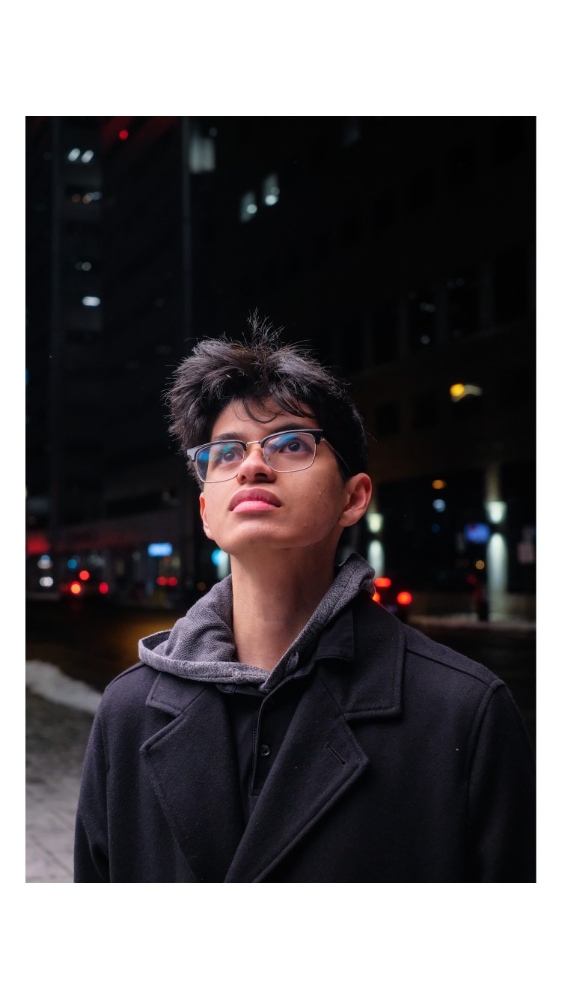
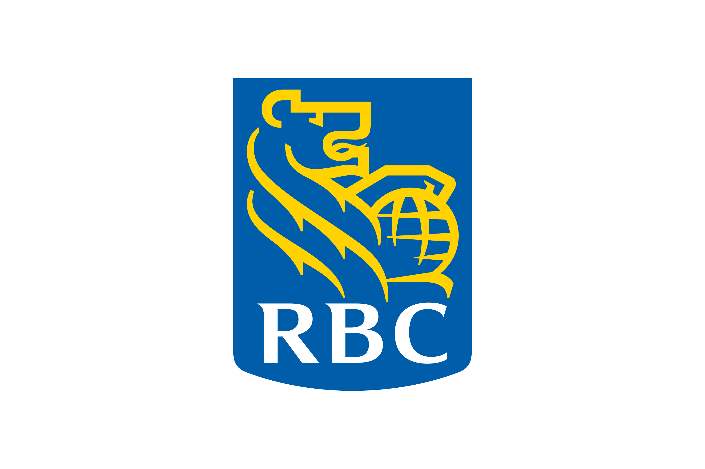
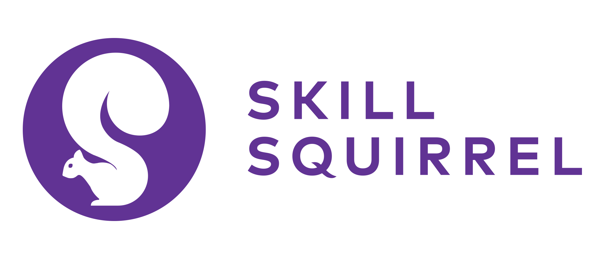
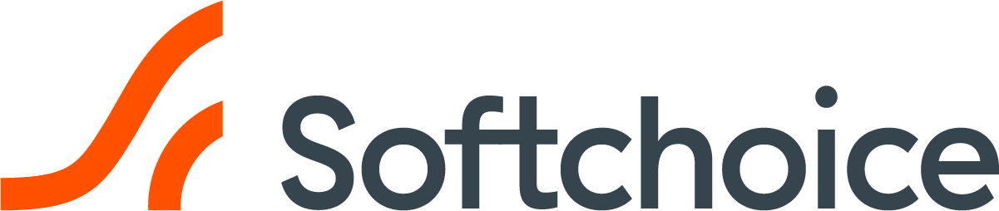

Hey! My name is Dean. I am a front-end software developer who started programming at 10th grade of high school. I began with VB .NET creating desktop apps with WinForms and transitioned into C#.NET and later Python for general progamming. I started programming because it is a fun activity. It is very similar to legos where you have to build something with a set of instructions but the difference is that I create the instructions.
Aside from my professional side of about me, I would like to expand a bit on my personal side! I am passionate about self-improvement. Whether that is in a video game like Overwatch (Peak Rank: Masters 2) or Valorant (Peak Rank: Diamond 1), my skincare, my fragrance, finances, fashion, etc!
A little fun fact: I enjoy watching my childhood show: Lego Ninjago (Still going!!)
I am primarily a web Front-End Developer. I can go on and on about a bunch of technologies I've used. But Id rather mention the skills I am the best with.


